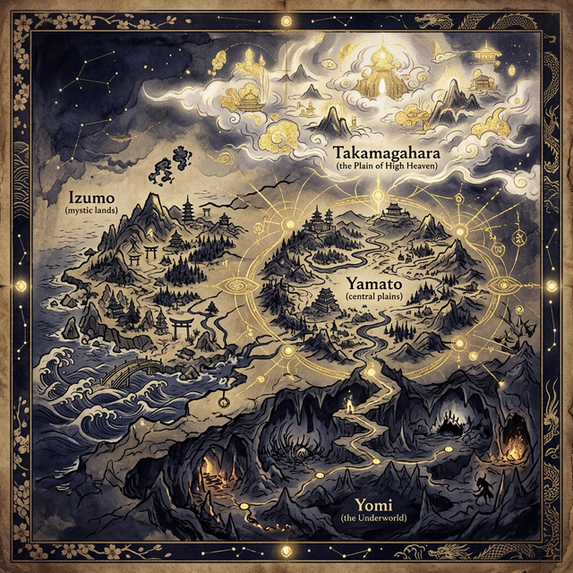

全五部・五十話
～日本神話物語～
完全な世界を求めたが不完全な子を生み、
永遠の命を得られたが花の美しさを選び、
覗くなと言われたが覗いてしまう──
日本神話は「人間の不完全さ」を否定せず、
その儚さの中にこそ美を見出す。
私たちはみな、不完全だ。
失敗し、嫉妬し、愛する者を失い、時に取り返しのつかない過ちを犯す。
しかし、それは決して恥ずべきことではない。
なぜなら私たちの祖先たる神々もまた、ひどく不完全だったのだから──。
これは、完全な世界を求めて破綻した父と母の物語であり、
絶対の秩序を守り抜いて孤独になった月の物語であり、
永遠の命よりも、一度きりしか咲かない花の美しさを選んだ男の物語である。
不完全さの中にこそ、真の美しさが宿る。
さあ、神代の目撃者となろう。

「高天原・葦原中国・黄泉の国」が交錯する神々の世界
PART I
世界の始まりと、最初の夫婦の愛と別離
何もなかった──嘘だ。すべてが在りすぎたのだ。混沌の底で最初の「意志」が目覚め、造化三神が生まれる。
読む独り神たちの孤独な誕生。やがて最後に現れた一組の男女神──イザナギとイザナミに、途方もない命令が下される。
読む天沼矛で混沌の海をかき回し、世界最初の大地を創る。しかしイザナミが先に声をかけたその瞬間──。
読む声も骨もない最初の子を、葦の舟に乗せて海へ流す。世界に「慟哭」が生まれた瞬間。
読む正しき順で結ばれた二柱が、八つの島を次々と生む。束の間の幸福が世界を美しく満たしていく。
読む最後の子は──火だった。母の体を内から焼きながら生まれ、イザナミは目を閉じる。
読む妻を焼いた火の子を十拳剣で斬る。血から戦の神が生まれ、父は黄泉へと歩き出す。
読む死者の国で妻の声を聞く。「私の姿を見ないで」──その約束は、守られなかった。
読む腐乱の姿を見られた女神の怒りと恥。黄泉醜女が闇を駆け、愛は呪いに変わる。
読む岩の向こうで妻が静かに言う。「愛しい人、あなたの国の民を──毎日千人、殺してやる」。その言葉に、愛と憎しみの境界が消えた。
読むPART II
三貴子の葛藤と、太陽が消えた日
正しさだけを信じた月神は、食の女神を斬る。その刃が──昼と夜を永遠に引き裂いた。
読む母を知らぬ嵐神スサノオ、泣くことしかできない。姉へ向かうその足音は──大地を震わす慟哭だった。
読む剣と勾玉を噛み砕き、誓約で心の清さを示す。しかし「勝った」と叫ぶ不器用が──災いの幕を開ける。
読む斑馬の皮が機織殿に落ちた時、一人の織女が命を落とす。太陽の女神が──初めて微笑みを止めた。
読む太陽が岩戸に隠れ、世界は闇に沈んだ。知恵の神が示した策は──絶望の中で、笑うこと。
読むウズメは闇の中で裸身を晒し、狂ったように舞う。八百万の大笑いが──岩の向こうの太陽に届く。
読む「あなたより尊い神が現れた」──嘘の誘いに覗いた太陽は、鏡の中に仮面を脱いだ己を見た。
読むタヂカラオの怪力が岩戸を引き開け、光が爆ぜた。太陽は──もう一人で背負わないと決めた。
読む追放されたスサノオが出雲で出会ったのは、七人の姉を喪い声なく泣く末娘だった。
読む七回の別れの酒が、八つの首を眠らせる。初めて誰かを守るために剣を振るい──尾から神剣が現れた。
読むPART III
二度殺された神の復活と、国づくりの物語
大蛇を斬った嵐神が詠む、日本最初の歌。天叢雲剣を姉に贈り、贖罪の宮が建つ。
読む皮を剥がれた白兎に、荷物持ちの末っ子だけが手を差し伸べる。その優しさが運命を変えた。
読む焼けた岩に潰され、大木に挟まれ──二度殺された末っ子を、母は命を削って蘇らせる。
読む蛇、ムカデ、蜂──根の国の試練の夜ごと、スセリビメの声が少しずつ愛に変わる。
読む四方から迫る野火。地の底で助けたのは、「大丈夫だよ」を覚えていた一匹のネズミだった。
読むスサノオの髪を柱に結び、宝を奪い、二人は走る。背に届く怒声は──祝福だった。
読む根の国を越えた男が出雲に還る。八十の兄を退けたのは、大刀ではなく──静かな目だった。
読む手の平に乗る小さな知恵の神と、自らの魂の分身。国造りの果てに大国主が信じたのは己自身。
読む恋多き大国主に、スセリビメの声が氷点下に凍る。嫉妬の歌の底に、愛が燃えていた。
読む豊かな出雲を高天原が欲する。稲佐の浜に剣を逆さに突き立て、雷神が降りてきた。
読むPART IV
天から地へ──神の血が人の世界に降り立つ
「大丈夫だよ」──口癖の主が、初めてその言葉を失う。大国主、砂浜に独り残る国譲りの夜。
読む「えっ」──それが天孫の第一声だった。三種の神器を抱え、不完全な若き神が雲を突き抜ける。
読む異形の巨神に怯む一行の中、ウズメだけが笑って歩み寄る。天の八衢で始まる、鼻の長い恋。
読む雲を突き抜け、霧の山頂に降り立った天孫の最初の行為はくしゃみだった。冷たい土の感触に戸惑いながら、この男は思う──ここが、私が治めるべき地なのか、と。
読む花を選び、岩を「醜い」と返した。その一言で──人は永遠を失い、散る命を生きることになる。
読む疑うなら証明する──花の姫は自ら産屋に火を放つ。女の怒りが炎になる時、三つの命が燃え残る。
読むたった一本の釣り針が返せない。兄の支配に泣く弟は、竹籠の舟で海の底へ沈んでいく。
読む海底の宮殿で三年、愛に溺れて針を忘れた。ため息一つで現実が蘇り、山幸彦は海を発つ。
読む潮満珠が海を膨らませ、兄が膝をつく。しかし弟は踏みつけず──その手を取り、立たせた。
読む「見ないで」──また同じ禁忌。鰐の姿で泣く妻は海に帰り、残された子がやがて神武となる。
読むPART V
神と人の血を引く者が、この国を建てる
末弟は、まだ何も知らなかった。東に何があるかも、兄たちのうち何人が帰れないかも。ただ兄の手が肩に置かれた、最後の朝の話だ。
読む最初は泣いていた。十六年後、同じ男が血で濡れた剣を川で洗いながら、ただ前を見ていた。旅が人を作るのではない──喪失が作るのだ。
読む太陽に向かって攻めた愚かさ。兄の手が弟の肩に届かず落ちた時、東征の本当の代償が始まる。
読む三兄弟が海に消え、毒気が最後の一人を倒す。闇の底で霊剣が光り、三本足の烏が道を示す。
読む罠の匂いを嗅ぎ分け、策士を己の策で殺す。酒宴の歌が合図に変わる時、祖先の血が繰り返す。
読むもう一人の天孫が大和にいた。正義と正義がぶつかり、敗者の目に映ったのは──守りたかった空だった。
読む三人の兄を失った末弟が、震える声で最初の王となる。不完全だからこそ──始まる。
読む流れてきた赤い矢が、一人の姫の人生を変えた。神に選ばれたその女が産む子は、人でも神でもなく──この国の最初の「王妃」となる。
読む三輪山から見えない糸を引く大国主。仮面を外した「大丈夫」が、初めて本物の声で響く。
読む不完全な神々の手は、いつも届かなかった。その届かなさが──祈りの始まりだった。
読む